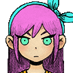
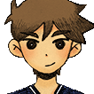

OMORI'S CHARACTERS

Main characters
 OMORI is a young boy who wears a black tank top, long black socks and black striped shorts. He is the only character to be colored black and white unlike the colorful denizens of HEADSPACE, and he is also the only character with empty eyes with no pupils. His overall design stems from Sunny's twelve-year-old appearance.
OMORI is a young boy who wears a black tank top, long black socks and black striped shorts. He is the only character to be colored black and white unlike the colorful denizens of HEADSPACE, and he is also the only character with empty eyes with no pupils. His overall design stems from Sunny's twelve-year-old appearance.
Not much can be said about OMORI's personality as he is a silent protagonist. However, it is suggested that he is quite melancholy, as his narration has bleak entrances at times and his final battle dialogue goes straight to Sunny. His abilities also reflect this gloom as they are either violent in nature or just get SAD or have an advantage while having SAD. However, it can be speculated that this is more a reflection of Sunny's emotional state, as OMORI is a character built from Sunny's conscience in WHITE SPACE and HEADSPACE.
 Sunny looks like an average teenager. He has straight, black, ear-length hair, with fringe that slightly covers his eyes. He also has arched eyebrows and eyes a similar shade of black, in contrast to his paler skin. In the present, he wears a white collared shirt and a blue vest over it. He wears beige shorts, white socks and black shoes. He also appears to have grown a bit, but not by much compared to his friends, possibly due to malnutrition from spending four years in incarceration.
Sunny looks like an average teenager. He has straight, black, ear-length hair, with fringe that slightly covers his eyes. He also has arched eyebrows and eyes a similar shade of black, in contrast to his paler skin. In the present, he wears a white collared shirt and a blue vest over it. He wears beige shorts, white socks and black shoes. He also appears to have grown a bit, but not by much compared to his friends, possibly due to malnutrition from spending four years in incarceration.
Sunny was described as a shy but friendly boy. He played the violin to perform in recitals with his sister MARI. BASIL described Sunny as a "really good listener" and although he was shy, Sunny cared about his friends and they got along well. Sunny is said to have "a great memory". After SOMETHING happens, he goes from shy to withdrawn and completely cuts off from his friends and the world, turning him into a hikikomori for several years.

In HEADSPACE, Aubrey wears a light blue dress and a pink bow in her long hair. Like the other four, she wears no socks or shoes and her hair and eyes are purple/dark blue like Kel and Hero. She also carries a blue stuffed animal known as MR. PLANTEGG. Of course, Aubrey has dark brown hair and eyes, but she dyed her hair pink and wears blue-green contact lenses. She wore different outfits as a child, but often had a pink bow in her hair. As an older teen, she is seen wearing a bright blue handkerchief tied in a bow, a white and yellow varsity jacket, a crop top and miniskirt, and wielding a denim baton.
During her childhood, Aubrey is very cheerful and always likes to play with her friends. Despite this, she is very easily saddened and worried, for example she is most anxious when BASIL goes missing. She is often clumsy, resulting in yelling from Kel, with whom she is always arguing. She also turns out to be very emotional at times when something bad happens, but still maintains her happy, happy attitude. These traits are shared with her HEADSPACE counterpart, albeit slightly different with her puppy love persona towards OMORI.
The HEADSPACE version of Kel appears as a young boy wearing a colorful tank top covered in multicolored squares. Like the others in the party, he wears no socks or shoes and his hair and eyes are purple like Aubrey and Hero. In the real world, Kel appears as an older teenager. He has grown much bigger than most of his friends. Like his brother Hero, Kel has brown hair and dark skin. He also has a well-built body as he constantly plays basketball every day. His main clothing consists of an orange basketball uniform with white stripes that resembles a fox.
During his childhood, Kel is a bit cheeky, impulsive and rude and always argues with his friends. He is very competitive by nature, always wants to win races or races and is very energetic and fast indeed. He also hates romance and that girls have cooties. But although he is loud and likes to annoy his friends, he genuinely cares about and protects them. Kel seems to have a strong bond with his brother Hero and occasionally bickers with Aubrey over minor disagreements over minor topics. He even sees the quiet Sunny as someone who is great and believes the best in him. These properties are shared with its HEADSPACE counterpart.

The HEADSPACE version of Hero wears blue striped pajamas. His hair is unkempt from sleep, as can be seen in his sprites. Like Kel and Aubrey, he has no socks or shoes and his hair and eyes are purple. According to Sprout Mole Mike, he is 1.75 meters at the age of 15. Hero is also the oldest and tallest of the group. In the present, Hero appears as a young adult man with a more mature appearance compared to the others. Hero has neatly styled brown hair and black eyes like Kel. His main outfit consists of a navy blue V-neck sweater, gray pants and white shoes. It is also noteworthy that he grew bigger like the other main characters.
During his childhood, Hero is the peacemaker of the group, trying to restrain his friends when they get too excited. He is described as having a mild personality and passionate about housework such as baking, cooking and cleaning which makes him an ideal worker. Hero also has a charismatic side that he uses to charm others. His charisma allows him to convince others to agree to his requests, get discounts from Mailbox and befriend animals like Ems. However, he can sometimes be a push when confronted and has a hard time refusing others. He also appears to have arachnophobia (an irrational fear of spiders) to the point of freezing completely. These properties are shared with its HEADSPACE counterpart.